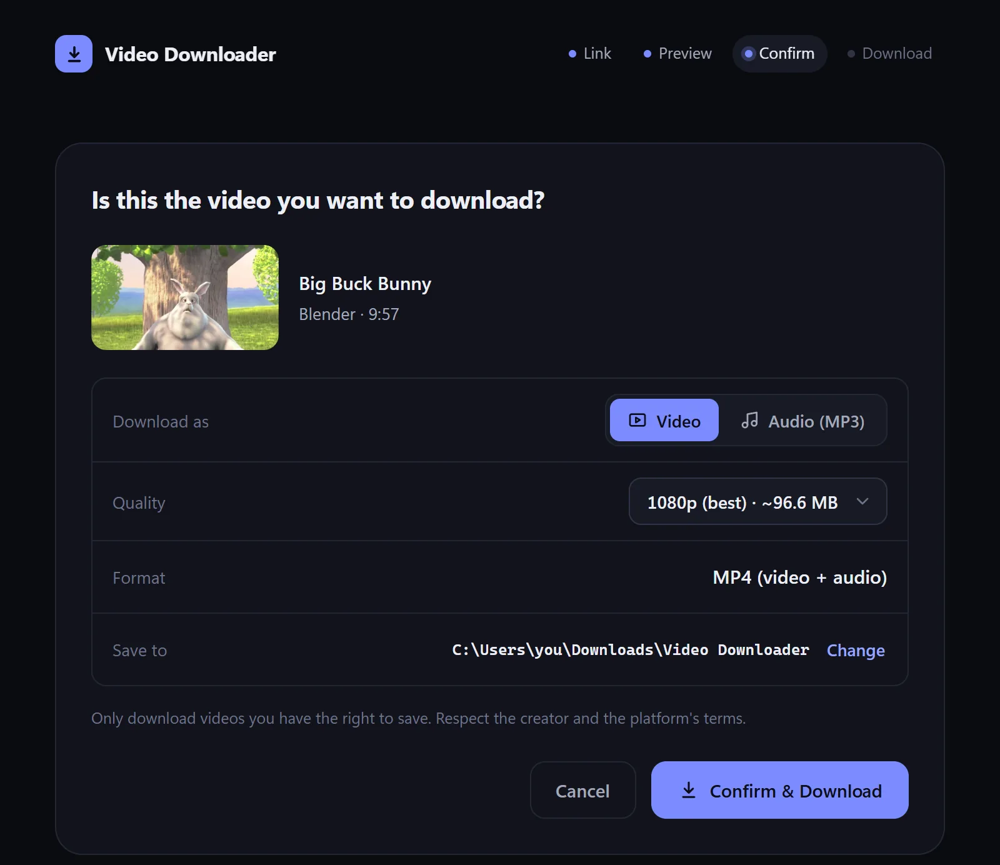
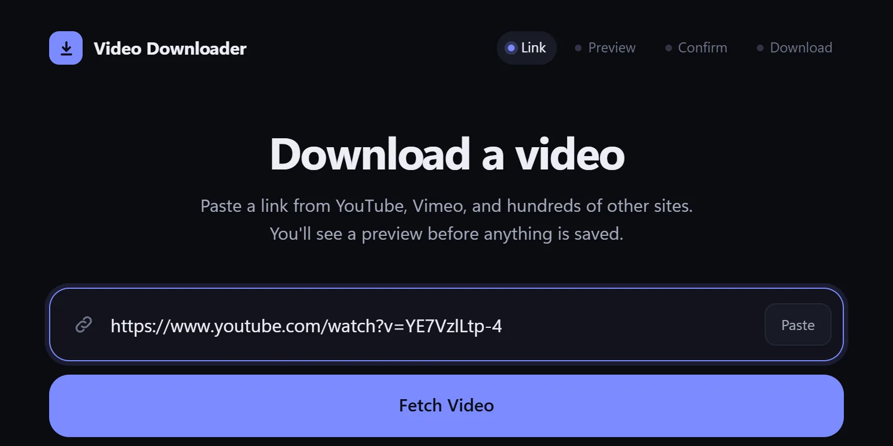
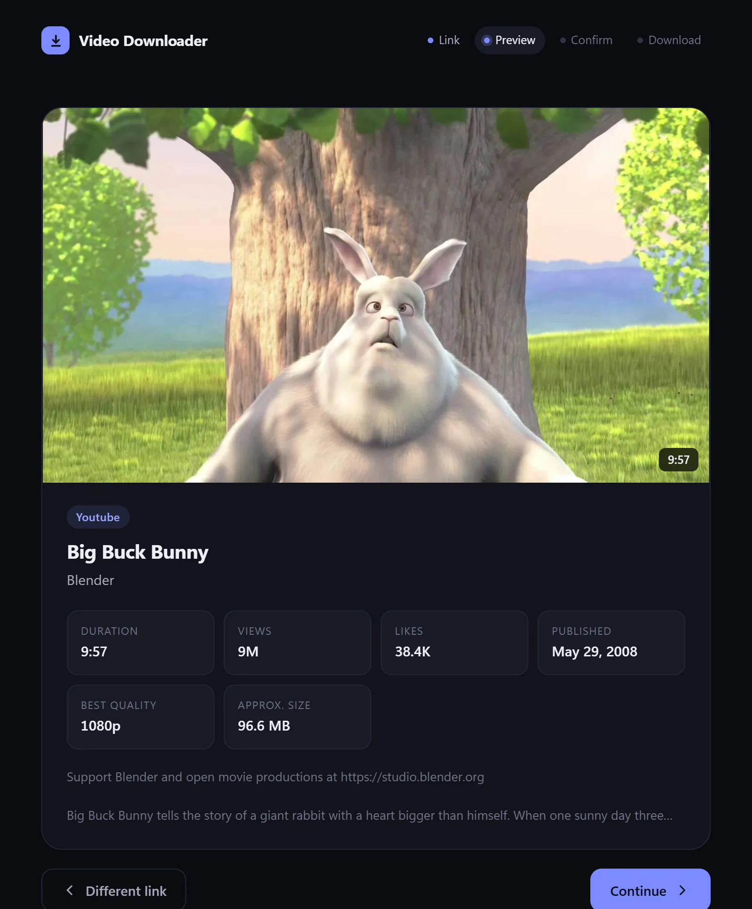
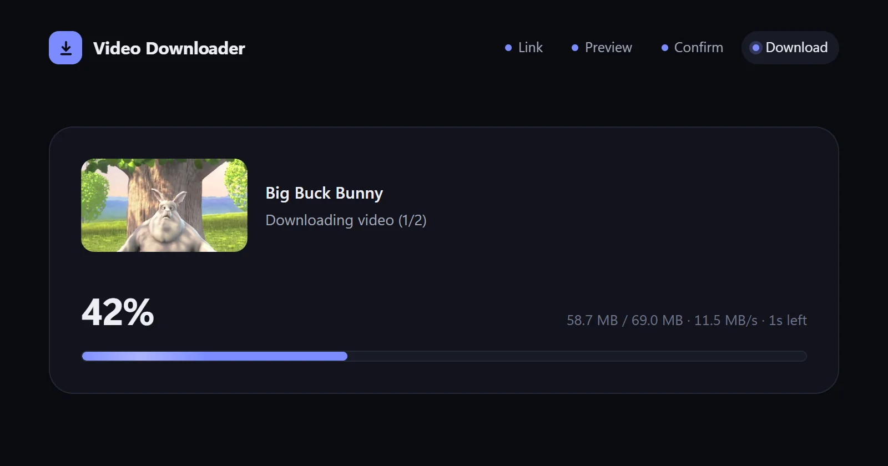
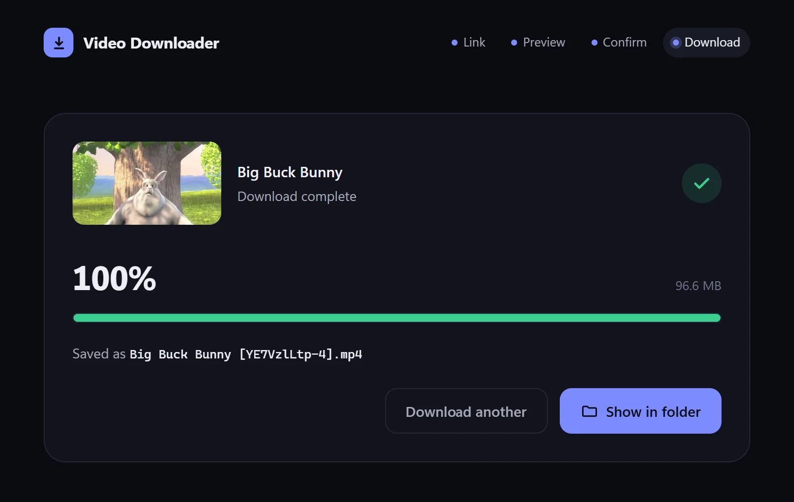

Nothing else to install
Everything it needs is built in. No Python, no FFmpeg, no browser extensions.
Free for Windows 10 & 11
Paste a link, check the preview, and confirm. Save it as an MP4 in the quality you choose, or as an MP3. There are no ads, you don't need an account, and there's nothing else to install.
Video Downloader runs on Windows. You can still download it here and copy it to a Windows PC.

Nothing downloads until you've seen exactly what you're getting.
Copy a link from YouTube, Vimeo, or hundreds of other sites, paste it in, and click Fetch Video.

See the thumbnail, title, channel, length, best quality, and approximate size, so you know it's the right video before saving anything.

Pick Video or Audio (MP3), choose the quality, and click Confirm & Download. You can cancel at any time. When it's done, Show in folder takes you straight to the file.


Everything it needs is built in. No Python, no FFmpeg, no browser extensions.
Pick any resolution the video offers, up to 4K, with the file size shown up front. You can also save just the audio as an MP3 with cover art.
You see a preview and confirm before anything downloads, so you won't get surprise files.
It runs entirely on your PC. You don't need an account, and there's no tracking and no ads.
It's powered by yt-dlp, the open-source engine trusted by millions.
Read every line on GitHub. New versions install with one click from inside the app.
Yes. There are no ads, no trial and no paid tier. The source code is public on GitHub.
YouTube, Vimeo, and hundreds more, through yt-dlp. Private, members-only, paywalled, or DRM-protected videos can't be downloaded.
Yes. On the confirm screen, switch to Audio (MP3). You'll get a 192 kbps MP3 with the title, channel and cover art filled in.
In Downloads\Video Downloader by default. Click Change on the confirm screen to pick another folder; the app remembers it.
When a new version is out, the app shows a banner. Click Update and it downloads, installs and reopens itself in about a minute.
A single .exe that runs without installing. It's handy on a USB stick or a PC where you can't install software, and it takes a few extra seconds to start.
Go to Settings → Apps → Installed apps → Video Downloader → Uninstall. Your downloaded videos are never touched.
Not yet. It's Windows-only for now.